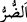
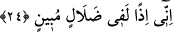
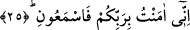

“O’ndan” beni yaratan Allah Teâlâ’dan “başka ilahlar” bâtıl ilahlar, yâni putlar “mı
edineyim?” Bu ifade ilâh edinmeyi mutlak olarak red ve inkâr etmektir. Yani ben
Allah’tan başka ilâhlar edinmem demektir. Sonra bu edinmemenin sebebini ortaya
koymak üzere söze başlayarak şöyle dedi:
“O çok esirgeyici Allah, eğer bana bir zarar dilerse onların” yâni o ilahların
“şefâati bana hiçbir fayda vermez” Çünkü onların şefâat hakkı yoktur ki fayda versin.
Onlar yardım ve destekle “beni” o zarardan ve istenmeyen durumdan “kurtaramazlar.”
“
” her türlü kötülük ve istenmeyen şeyin ismidir. “Beni kurtaramazlar” ifadesi,
onların acziyeti ve güçlerinin tükenmesi konusunda mübâlağa için tahsisten sonra
tâmim; yâni özelleştirdikten sonra yapılan bir genellemedir.
İmam Süheylî der ki: Anlatıldığına göre Habîbü’n-neccâr’da cüzam hastalığı vardı.
Elçilerden bir havârî duâ etti ve şifâ buldu. İşte bundan dolayı Habîb: “O çok esirgeyici
Allah, eğer bana bir zarar dilerse...” dedi.
Daha önce geçtiği gibi bazıları hasta olanın Habib’in oğlu olduğunu söylemiştir.
Ancak ikisinin de hasta olmasında mâni yoktur da denilebilir. Ya da oğlunun hasta
olması kendisinin hasta olması hükmündedir. Bundan dolayı da zararı kendisine nisbet
etmiştir. Buradaki zararın kavmin zarar görmesi de muhtemeldir. Çünkü kavmin bir çok
hastalarının elçilerin elinden şifa bulduğu rivâyet edilmiştir. Habîb yine daha önceki
üslûb üzere onların gönüllerini hakka meylettirmek ve kendilerine yapılan ihsânı
tanıtmak için incelikte bulunarak zararı kendisine nisbet etmiştir.
24. “İşte o zaman ben apaçık bir sapıklığın içine gömülmüş olurum.”
“İşte o zaman” Allah’tan başka ilâhlar edindiğim zaman “ben apaçık bir sapıklığın
içine gömülmüş olurum.” Çünkü fayda ve zarar veremeyen bir şeyi kendinden başka
kudret sâhibi olmayan ve O’nun hayrından başka hayır bulunmayan yaratıcıya ortak
koşmak azıcık idrak ve temyiz sâhibi olan kimseye gizli kalmayacak açık bir sapıklıktır.
25. “Şüphesiz ben, Rabbinize inandım, beni dinleyin.”
“Şüphesiz ben,” sizi yaratan ve çeşitli nimetlerle terbiye eden “Rabbinize inandım”
Habîbü’n-neccâr onların Rablerinin de kendisinin ibâdet ettiği zat olup onların da
Rablerine ibâdet etmeleri gerektiğini bilmeleri için: “Ben Rabbime inandım” dememiş;
“Ben Rabbinize inandım” demiştir. “Ben Rabbime inandım” deseydi belki onlar “Sen